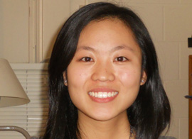
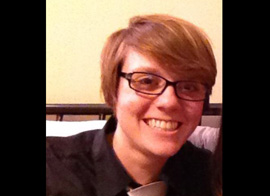

Exec Board 2012-2013
- Program Directors
- Fred Tye
- Matt Evans
- Treasurer
- Lillian Chen
- Participant Coordinator
- Emily Smith
- Education
- Rebecca Schieber
- Fundraising Coordinator
- Mary Kate Binecki
- Class Trip Coordinator
- Karen Wilber
- Community Outreach
- Publicity Coordinator
- Taiyo Sogawa
- Site Leader Coordinator
- Jess Smasal
- Matt Evans
- Pre-WWW Coordinators
- Chelsea Corbin
- Greg Shanahan
- Site Development Coordinators
- Michelle Ki
- D'Laney Gielow
Major: Social Policy
Year: 2013
Hometown: Thiensville, WI
Favorite Trip: I can't decide!
About Me
Hello friends! My name is Danielle Moehrke and I'm an incoming senior in SESP, majoring in social policy. I think want to do something with education reform post-graduation (but there's still time to decide, right? My dad doesn't think so...). Anyway, here are some of my random interests/favorites/pastimes, shopping-list style: flannel, mud, overalls, jests, Birkenstocks, purple, illegal Bolivian tea, campfires, runningrunningrunning, bananagrams, outdoor concerts, brushing out my curls, falling off my ripstick, thunderstorms, oh, and ASB, of course! I've been on 5 ASB trips so far, and I'm super pumped to site-lead this fall. On a side note, brace yourselves, I really enjoy the ukulele and am going to learn harmonica over the summer, so there may or may not be plans for car ride sing-a-longs.Major: Learning and Organizational Change
Year: 2013
Hometown: Glenview, IL
Favorite Trip: I can't remember!
About Me
Heyo. My name is Fred Tye and I'm an incoming senior majoring in Learning and Organizational Change. I'm originally from Glenview, IL, a suburb just west of Evanston. ASB has hands down made my experience at Northwestern. This will be my sixth trip, which probably makes me an ASeniorcitizenB. In my free time I play a lot of tennis, cook semi-successfully, and watch unhealthy amounts of Arrested Development. I have also been known to sing to myself, but only select lyrics on repeat. Today, Call Me Maybe. Tomorrow, some Adele perhaps? ASB is FREAKING AWESOME.Major: Computer Science
Year: 2014
Hometown: Chatham, NJ
Favorite Trip: All of them!
About Me
Matt Evans is a sophomore studying computer science with a passion for apathy. He is originally from England, but grew up most of his life in New Jersey (yes, this sadly means that he has no delightful British accent). He loves honey mustard dressing, big dogs (German Shepherds and Huskies especially), ultimate, and spending whole days watching TV and napping. His favorite music groups are Pink Floyd and the Shins, and he loves listening to Mika on sunny days. He has been on four ASB trips, and will be going on his fifth trip (and his third as site leader) this fall. He is excited to be one of three awesome Program Directors to help the organization he loves so much grow and get (if it's possible) even better! 
Major: Biological Sciences and Global Health
Year: 2014
Hometown: Canton, MI
Favorite Trip: St. Louis Arc in St. Louis, MO, Spring 2012
About Me
In addition to being involved with ASB, I also do research in a physiology lab at Feinberg and am involved in my sorority. I fell in love with ASB my freshman year on my PreWildcat Welcome trip and have been on 4 trips (and counting!) since then. In my free time I like to go to zumba classes, attempt to cook complicated recipes, play catchphrase, go ice skating and explore the ethnic neighborhoods of Chicago. My goal since freshman year has been to visit each of the different neighborhoods in Chicago before I graduate! 
Major: Biology, Global Health and Gender Studies Minor
Year: 2014
Hometown: Raleigh, NC
Favorite Trip: Arnette House in Ocala, FL, Winter 2011
About Me
I'm a pre-med biology major and my (current) dream job would be to do some sort of work in healthcare with LGBT teenagers. Other than ASB and studying hours upon hours of organic chemistry, I enjoy long naps on the lakefill, looking like Justin Bieber, eating stir-fry, playing ice hockey, sitting in coffee shops, and being sassy. I'm fluent in sarcasm and my spirit animal is the socially awkward penguin.
Major: Political Science
Year: 2015
Hometown: Orland Park, IL
Favorite Trip: Arnette House in Ocala, FL, Winter 2011
About Me
Rebecca's favorite things include America, buffalo wings, Chipotle, the color orange, the White Sox, winning, and Hershey's Cookies 'n' Cream Bars. Her dislikes include hugging, sand, and not awesome things. The hidden talent she is most proud of is her ability to name all 44 United States Presidents, in order, in approximately 11 seconds. Her spirit animal is the Hippopotamus, do to her relatively relaxed attitude, but inner drive and strength. She also enjoys educating people about ASB.Major: Econ and Math
Year: 2015
Hometown: Elmhurst, IL
Favorite Trip: Habitat for Humanity in Birmingham, AL, Spring 2012
About Me
I’m so excited to be on the ASBoard this year! Its going to be great! Some of my favorite things to do are play tennis, read, and hang out with friends. I also love to travel, which may be why I love ASB. I also love Chick-fil-a and that’s definitely been another plus to ASB. My biggest pet peeve is poor sidewalk walking etiquette, but besides that I’m pretty easy going! I have a fear of bicycles, which is a fun but irrelevant fact about my life! Anyway, I’m really excited to have a great year on ASB Exec!Major: Human Development and Psychological Services
Year: 2015
Hometown: Arlington Heights, IL
Favorite Trip: No More Deaths in Arizona, Spring Class Trip 2012
About Me
Karen is a rising sophomore in SESP studying Human Development & Psych Services with a Certificate in Civic Engagement. She loves how all of her ASBuds are like family to her. Outside of ASB, she enjoys being involved with Interfaith Hall, Dance Marathon, and student government. She loves RomComs, Brandon Flowers, and green gummy bears. Her favorite part about class trips is that you can go ANYWHERE IN THE WORLD, which brings up the ironic fact that she's never been outside of the United States.Major: Learning and Organizational Change and History
Year: 2013
Hometown: Garret Park, MD
Favorite Trip: I like them all!
About Me
I am orignially from Maryland, DC area, but am so excited to be in Chicago, as a lifelong Cubs fan. There’s nothing I love more than corny jokes and ASB puns, and if I'm not giggling, laughing or smiling, its most likely because I'm playing sports. I play Club Soccer for NU, but also ref and play all sorts of intramural sports, and I love any sort of friendly competition. My hidden talents include roasting marshmallows, making friendship bracelets, and befriending random people. And last but certainly not least, I loveeeee ASB. Since my own Freshman Pre-WW trip, i've been ASBallin' and my life goal is to make sure everyone loves ASB as much as I do.Major: Computer Engineering
Year: 2013
Hometown: Seattle, WA
Favorite Trip: Habitat for Humanity in Gulfport, MS, Winter 2012
About Me
Taiyo is a junior studying Computer Engineering. He thinks it would be the perfect major if there wasn't so much numbers involved. When he's not waiting in baited breath for his next ASB trip or speaking in the third person, you might find Taiyo day napping or re-watching episodes of Portlandia. Other likes include Thanksgiving leftovers and Skype sound effects. Taiyo talks too loudly on the phone in public areas. Despite being a Seattle sports fan, he likes to think that he's still a decent person.Major: History
Year: 2014
Hometown: St. Louis, MO
Favorite Trip:
About Me
Jess Smasal is a rising junior from the great city of St. Louis, Missouri. She's majoring in History and loves being nerdy about Jane Austen novels. Aside from that she loves being involved on campus, especially with ASB! She is very excited to be leading her second Pre-WW trip this year, as her trip last year was one of the ASBest times of her life! When Jess isn't lovin' on ASB, she is takin' care of business as the President of Inspire Media, a group here on campus that promotes media that inspires positive social change. She does Bikram Yoga (the hot one!) and loves shenanigans on the lakefill and exploring Evanston with friends!Major: Journalism and Environmental Policy and Culture
Year: 2014
Hometown: La Grange, Kentucky
Favorite Trip: Commonwealth Gardens in Madison, WI, Fall 2011
About Me
HELLO! My name is Chelsea and I am ASoB excited to serve as Pre-Wildcat Welcome Coordinator this year! I have been on four amazing trips that have me AddictedSB. Other things I'm addicted to include marshmallows, sunshine, summer dresses, barefeet, kites, yellow, and PUPPIES!Major: Undecided
Year: 2015
Hometown: Omaha, NE
Favorite Trip: Mission Wolf in Gardner, CO, Spring 2012
About Me
I have three brothers - two older, one younger. I'm really big on my family, the outdoors, being in really great shape, and adventuring. On campus, I'm on the men's club soccer team, I'm a pool manager/lifeguard/LTS instructor at SPAC, and I'm a brother in the Delta Tau Delta fraternity. I'm a fan of most music, but I have to give a particular shout out to my girl Taylor Swift. Rumor has it I once drove two hours to go to one of her concerts... I like talking about sports, environmental issues, and quoting Scrubs extensively. And ASBeing ridiculous whenever possible.Major: Social Policy
Year: 2014
Hometown: St.Louis, MO
Favorite Trip: Pace School in Pittsburgh, PA, Pre-WWW 2012
About Me
Michelle is a rising Junior studying Social Policy in SESP who can't believe that half her time at college has already passed. She loveloveloves food, especially of the yummy variety. Even after two years, she still holds out hope that people will one day break out into song and dance on Sheridan road and that her life would become a fantastic musical. When not raving about her love for ASB or SESP, Michelle is usually hanging out with her friends in Norris or at the lake, planning escapades to Chicago, traveling the world/drowning in wanderlust, and eating... Did she already mention she likes to eat? (: Michelle's been on five ASB trips and this coming Prew-WW will be her sixth trip. She also laughs at just about anything... (:
Major: Communication Studies and Political Science, French Minor
Year: 2013
Hometown: Milwaukee, Wisconsin
Favorite Trip: Historic Green in New Orleans, LA, Spring 2012